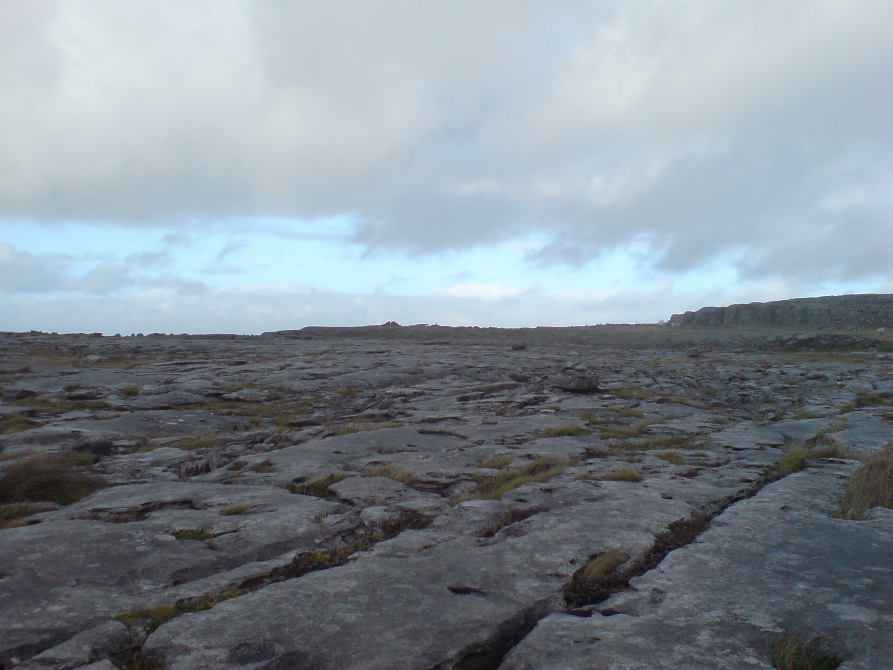
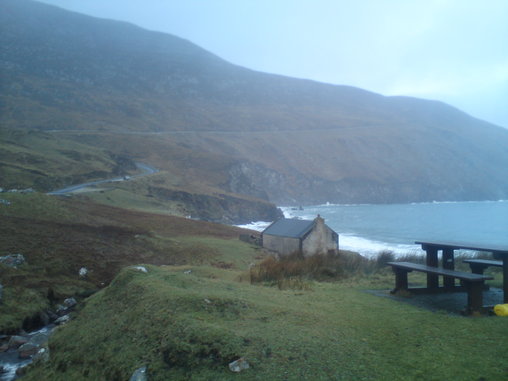

I miei luoghi preferiti da vedere in Irlanda
Ci sono molti posti dove andare e da vedere in Irlanda. Ecco una piccola selezione!
Le Scogliere di Moher
Le Scogliere di Moher si trovano nella Provincia di Clare, dalla quale provengo. Meritano decisamente una visita - guarda quanto sono belle!

Il Burren
Il Burren è un'area nella provincia di Clare e a Galway coperta da insolite formazioni rocciose calcaree. Fu formata da ghiacciai che si muovevano lungo il paesaggio, scavando sentieri nella morbida roccia. Puoi camminare per miglia lungo marciapiedi calcarei: grandi rocce piatte separate da profondi crepacci.
Il Burren ha una fauna ed una flora speciali grazie al suo clima, diverso dal resto dell'Irlanda. Qui puoi vedere fiori che non crescono da nessuna parte in campagna. Non puoi coglierli, perchè il paesaggio è protetto.

Isola di Achill
Si tratta di una grande isola al largo della costa della provincia di Mayo. Ha un bellissimo paesaggio selvaggio di montagne, torbiere e scogliere.
Parco Naturale di Fota
Un parco di conservazione della fauna selvatica nell'isola di Fota, nella provincia di Cork
Questo è come uno zoo, ma con una differenza. Cammini lungo sentieri che attraversano campi di giraffe e potresti vedere un lemure che si riposa su un albero vicino mentre passi accanto ad un gruppo di pinguini.
Newgrange
Newgrange è famosa per la sua tomba a corridoio. Uno stretto tunnel conduce al centro di una collina artificiale. Delle persone importanti furono sepolte qui migliaia di anni fa e la gente ha creato questa tomba per loro. Il soffitto e le pareti sono fatte interamente di pezzi piatti di roccia impilati uno sopra l'altro. Una mattina all'anno, durante il solstizio invernale, la luce del sole che sorge illumina tutto il tunnel, fino alla camera centrale.
Luoghi da visitare a Dublino
Dublino è la capitale dell'Irlanda. Ecco alcune delle cose da vedere in questa città:
- Zoo di Dublino
- Museo delle cere
- Ireland Epica